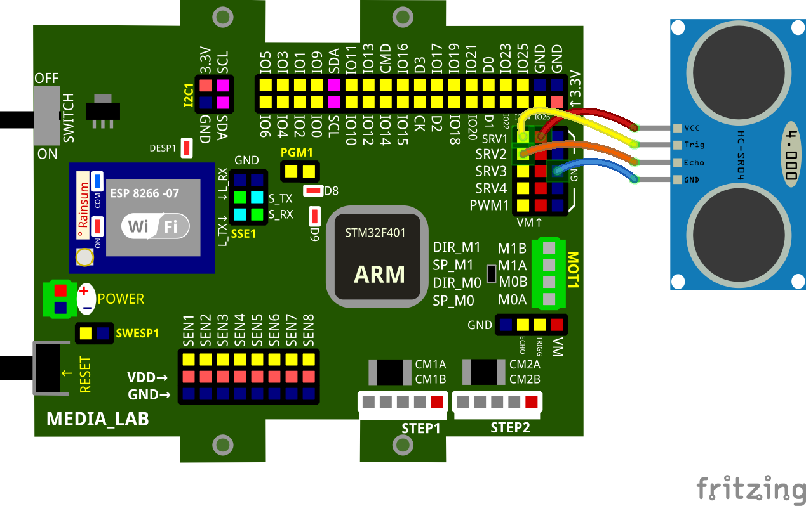
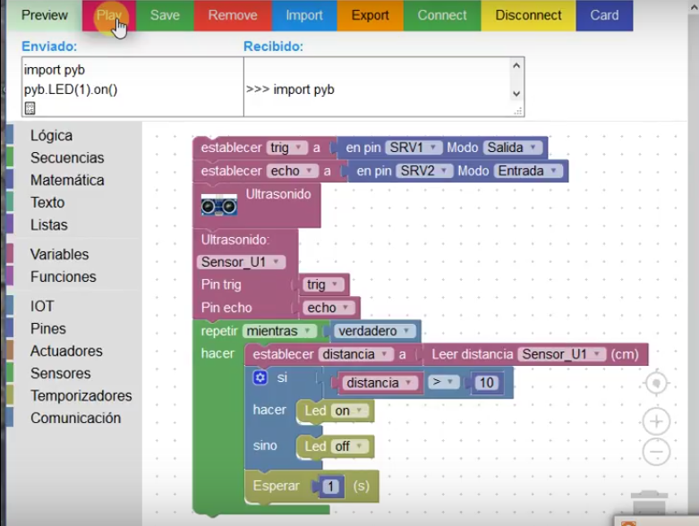

1. Ultrasonido¶
La tarjeta MediaLab puede conectarse con distintos sensores, en este caso con el sensor de ultrasonido (HC-SR04) se dará un ejemplo de esta capacidad. Para consultar más sobre ultrasonido: iultrasonido.rst
El sensor de ultrasonido HC-SR04 posee los siguientes pines de conección:
-Vcc y GND: serán los pines utilizdos para la transmición de energia-en este caso trabajan a 5v-. -Trig: Envía una señal de ultrasonido hasta en el momento que choque con un objeto -Echo: Cuando la señal enviada por Trig es golpeada por un objeto, esta se devolverá y será recibida por este pin(Ver en imagen1).
Su función es determinar la distancia del objeto.

imagen1
Para conectar con la tarjeta MediaLab sigá la siguiente imagen:

Luego de realizar esta conexión se debe realizar el algoritmo correspondiente el cual nos permitirá hacer uso del sensor. En la imagen2 puede evidenciar una de las formas:
** ** Recuerde que para hacer el algoritmo necesita de la plataforma Blockly Demo.

Determine cuales son las entradas, salidas y la información. En este, como se ve en la imagen, Trig como es quien envía la señal, se le da la connotación de una salida; por el contrario Echo es quien recibe esta señal así que será la entrada. Por último hay que tener presente que la información en este caso es la interpretación del tiempo para así calcular a que distancia se encuentra el objetvo golpeado por la onda. La primera parte del algoritmo en caso de no poseer el código se encuentra en la parte sensores, replíquela.
- Establezca una variable donde pueda guardar el estado del sensor. Esta casilla es diferente de la primera por el mero hecho de que lo único que esta busca es representar la utilidad del proceso. Para crear una nueva variable de click en elemento, luego en varibale nueva y nombrela.
** ** No olvide dar click en aceptar al crear la nueva variable, sino lo hace esta no quedará guardada
Ir al la columna de la parte izquierda, específicamente a la parte de “Sensores”, allí se verán distintos bloques, elegir el que dice “Leer distancia” y conectarlo con el bloque “establecer” cuya variable representa la utilidad del proceso, en este caso es “distancia”.
Bajo el bloque de establecer colocar el bloque “si, hacer” que se encuentra en la parte “Lógica”.
Frente a la parte “si” del bloque anterior, coloque el segundo bloque de arriba hacia abajo, que se identidica por tener dos casillas vacias sepradas por un igual, también ubicado en “Lógica”.
En la parte de “Hacer” el bloque “Led:on” ublicado en la parte de “Pines”.
Lo que se está haciendo en este caso es condicionando la acción de la tarjeta cuando reciba la onda del objeto.
Complete el primer espacio del bloque “si, hacer” en la parte de “si” con el bloque “distancia”,úbicado en la sección de variables, y el segundo espacio, después del igual, con el bloque azul con casilla cero, el más simple de todos los presentes, ubicado en la sección Matemática.
En este caso se programa la tarjeta cambiando el igual por un > y el “0” del último bloque por 10, esto busca programar la tarjeta de tal forma que si la distancia es mayor a 10-en la parte de “Led” se puso en “on”- el led ubicado en la tarjeta de encienda.
Haga click en el bloque “si, hacer” y luego en la tuerca de confihuración para asi agregar otra parte a este bloque “sino”, cuando termine de hacer esto vuelva a dar click en la tuerca y el bloque se habrá extendido.
Repita el paso 5, con la diferencia que en vez de colocarlo en “hacer”, se coloca en “sino” y cambie de “on” a “off”
- Bajo el anterior colocar el bloque “Esperar” ubicado en la parte de “temporizador” de la columna izquierda.Agregue el bloque más simple “0” ubicado en Matemática, en el espacio vacio de este.
En”0” se condicionan los segundos para poder notar el cambio de estado en caso que este suceda. En el ejemplo se cambia por 1 pero es elección propia los segundos que se elijan.
Agregue el bloque “repetir, hacer” debajo de “Pin hecho”
De click en el bloque “establecer:distancia” y sin soltarlo llevelo hasta “hacer” del bloque anterior, suelte, todos los bloque que siguen a “establecer:distancia” debieron quedar dentro de la casilla “hacer”.
Agregue el bloque “verdadero” ubicado en la sección de “Lógica” frente a “mientras” del bloque “repetir, hacer”
De click en “Connect” e idntifíque la dirección IP para establecer conección con la tarjeta.
Realice un “reset” en la tarjeta, para asegurar que quede bien programada.
- Repita el paso 14
el pAso 15 y 16 son omitibles si se encuentra seguro de su programación.
De click en “Play” y verifiqué que la informacipon este siendo recibida por la tarjeta, en la casilla “recibido” ubicada encima del algoritmo y compruebe que la ventana emergente, que avisa sobre esto, aparezca.
después de esto el algoritmo estará en proceso hasta que de “reset” a la tarjeta, verifique su funcionamiento acercando su mano o algún objeto a menos de 10cm y el Led debeerá apagarse.